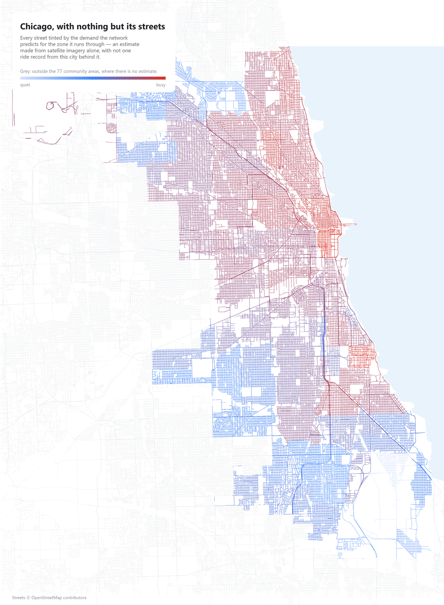

Ride demand from orbit
Entering a market, the question is always where inside this city do the rides come from? Answering it normally costs a pilot — months of operating at a loss to find out. Meanwhile a satellite has photographed every street, free, every five days, for a decade.
So a small convolutional network was trained on New York, where the answer is published — then handed Chicago, a city it has never seen. Click any neighbourhood below and watch it go through the network.
Left to right: the 1.28 km square of ground the network is handed, then the 16 most varied feature maps after each convolutional block — real activations, not illustrations. A channel keeps the same tile in every zone and is scaled against the same anchor measured across all 77, so a fainter tile really is a fainter response and switching zones shows the same filter responding differently. Resolution falls at every step — 64², 32², 16², 8² — while the number of channels climbs, and the last block's 128 numbers are what become the estimate.
Supervised learning in one control: drag the epoch. Left is New York, where every dot has a published answer the network is corrected against. Right is Chicago, run through the same weights at the same moment, with nothing to correct against.
Held-out New York zones. At epoch 1 the network answers roughly the same number for every zone — a flat line of dots. The cloud only turns into the diagonal because each of these dots has a real answer behind it to be corrected towards.
The same weights, the same epoch, a city the training loop never touches. It lands parallel to the diagonal but sits below it: the order is right and the level is not, and no amount of further training moves that.
Chicago's rank correlation reaches 0.88 by the third epoch and then holds — σ of 0.005 over the remaining 55. Chicago's R² on the very same epochs swings from −37 to +0.63, σ of 0.219. What transfers is learned almost immediately and stays; what does not transfer never settles at all. The shipped epoch is chosen on New York's validation split alone — picking the epoch where Chicago happens to look best would be reading the answer sheet.
Trained on 255 New York zones; scored on 77 Chicago zones in a city that was never shown to it, in any form.
Shown a city it has never encountered, the network still knows which zones are busier than which — rank correlation barely moves. What collapses is the absolute level. New York runs at a median of 744 trips/km²/day and Chicago at 128: a six-fold gap that is market adoption, taxi regulation and transit competition. None of that is visible from orbit, and no larger network would find it.
The obvious objection: imagery is a roundabout way of measuring urban density, and OSM hands that over directly. So here is the same evaluation — same zones, same 1.28 km squares, same target, same train-on-New-York split — given the road network instead of the pixels.
| on Chicago, never seen | R² | rank ρ | median error |
|---|
Chicago drawn only as its streets, every one tinted by the demand the network predicts for the zone it runs through. Grey is outside the 77 community areas, where there is no estimate.

Not one ride record from this city went into a single colour here. The Loop burns, the North Side runs warm, the South and West sides cool — an ordering the trip data agrees with at ρ 0.88, produced by a network that has never seen a Chicago trip. 68,416 streets, 14,713 km, from OpenStreetMap.
Both axes log scale; the dashed diagonal is a perfect call. The cloud runs parallel to it but flattened — quiet zones over-called, the busiest under-called. That is the level error, drawn. The highlighted point is the zone selected on the map.
One scalar offset fitted on k zones where real demand is known, 400 random draws each. One zone halves the error. Past five, more local data buys nothing — what is left is no longer level error.